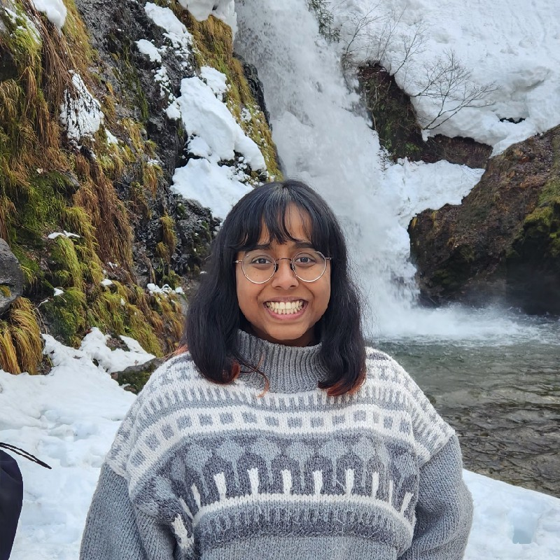

|
Mayanka Medhe I'm a Research Engineer at Honda R&D Tokyo in the Human-Machine Interaction Team, where I develop embodied multimodal AI and smartphone-based interaction systems for autonomous micro-mobility robots like CiKoMa and WaPOCHI. My work spans vision-language models, egocentric perception, and spatial reasoning to enable natural interaction and user identification in complex real-world settings. Previously, I completed my M.S. from the University of Tokyo advised by Prof. Yoichi Sato, where I researched multimodal video understanding with eye gaze and natural language in collaboration with RIKEN CBS. I received my B.Tech. from IIT Bombay advised by Prof. Leena Vachhani. |
 |
{kind=link}
Research InterestsVision-Language Models, Egocentric Vision, Human-Robot Interaction, Scene Understanding, Spatial Reasoning for Embodied AI |
Selected WorkSmartwatch-Robot Interaction System (Honda R&D) — Led development of a vision-language control interface for micro-mobility robots via smartwatch voice commands; deployed in public PoC with 1000+ users. Spatial RAG Module — Built a Spatial Retrieval-Augmented Generation pipeline to interpret vague geospatial natural language queries for micro-mobility navigation. Pedestrian Attribute Recognition — Developed fine-grained person identification models for user-aware following and leading behavior in crowds. |
Publications & Patents
|
EducationUniversity of Tokyo, M.S. in Information Science & Technology (2020–2022) IIT Bombay, B.Tech. in Computer Science and Engineering (2016–2020) |
Volunteering
Freelance Instructor — Saturday Kids Japan (2021–2022) Conducted interactive coding and robotics workshops for children aged 5–14, using tools such as Scratch, Minecraft, and LEGO Robotics to encourage curiosity and creativity in learning. 
Volunteer — ISA Japan (International School Assist) (2021–2022) Organized empowerment and English-speaking programs at high schools across Japan, fostering teamwork, presentation skills, and cultural exchange among students. 
Farm Volunteer — France (2024) Participated in sustainable farming activities, animal care, and permaculture maintenance while engaging in cultural exchange and eco-living practices in rural France. |
|
© 2025 Mayanka Medhe | Last updated November 2025 Adapted from Jon Barron’s academic website template. |